2022（R4） ゴールデンウィーク
結局、毎回保管したレールを組立てるほうが確実のような・・・
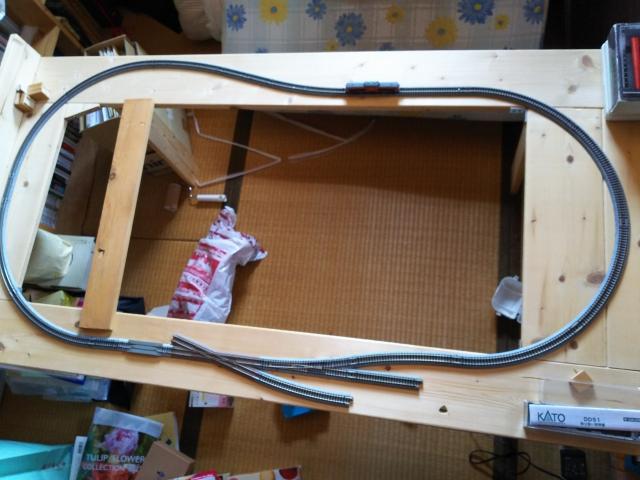
何年か前に、近くのコーナンで１×４材をカットし
てもらって作った土台に、線路１周分は固定済みで
した。
今回は、ここに外回りの線路を設置します。
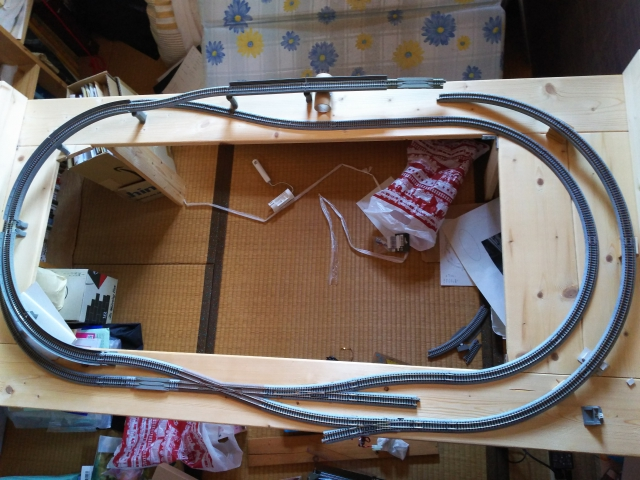
元々の構想では、外回り線も固定するつもりだった
んですが、保管の時に、この土台は立て掛けるしか
ないので、それをすると重力で落下することが判明
して、固定化は断念。
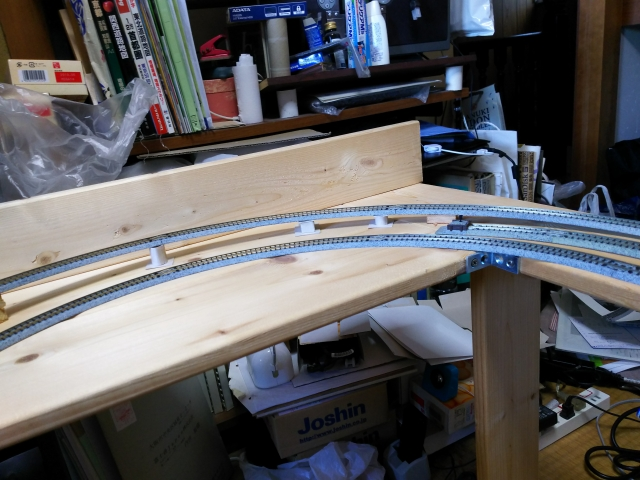
高架の土台だけを固定しておくことにします。
端材や空き箱の紙で作っていきます。
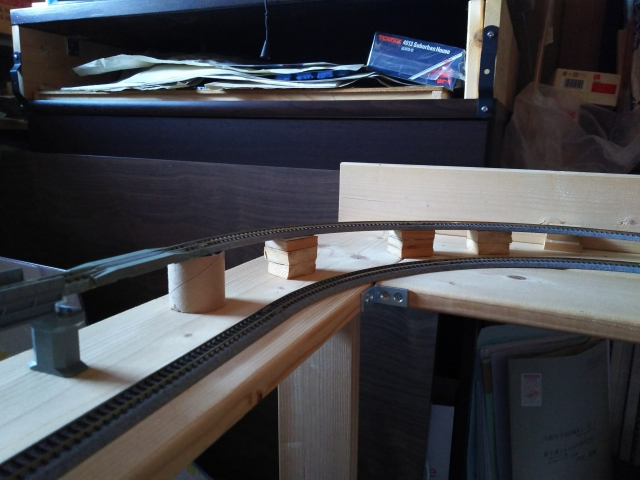
一部は既製品の高架橋脚も使ってます。
最終的には、築堤になって高架土台は隠れる予定な
ので、見た目は気にせず進めます。
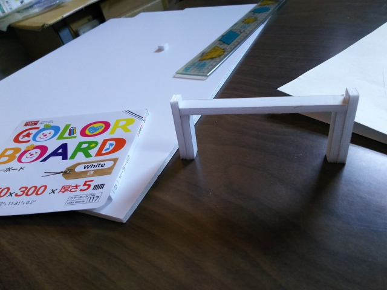
問題は、内回り線との交差部分。
真下に橋脚を設置するスペースもなく、またぐ形の
脚を造ってみます。
ダイソーで手に入れたスチレンボードで作ってみま
した。
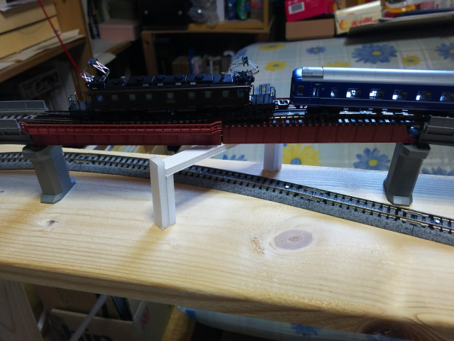
ええ感じで出来ました。色塗ったら、それっぽくな
るかな・・・
（ＥＦ５７がブルトレなんて牽引してない！という
ツッコミはご容赦下さい）
しか～し！なんと、下の線路をはしる車両のパンタ
グラフがひっかかることが判明！ショック！
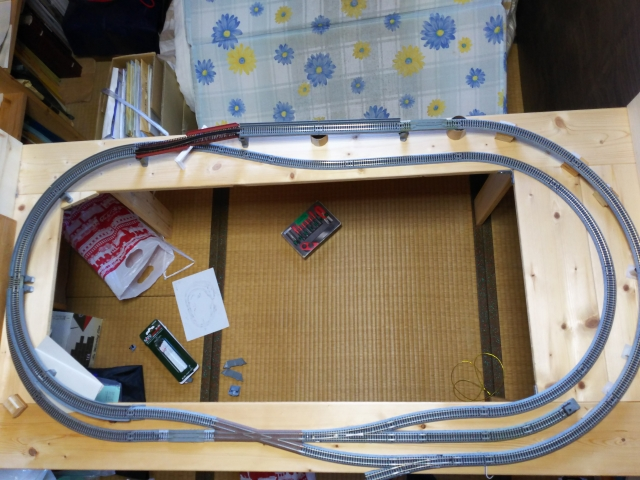
もうひとつのショックは、一点豪華主義で購入した
曲線単線デッキガーダー（赤い部分）が、強めに持
った途端に一部が破損してしまったことです。不良
品ちゃうんかいな・・・
気力もなえて、ここらで作業を終わります。
しかし走りは悪いなぁ。線路のメンテをちゃんとや
らなアカンのやろけど、あ～めんど。
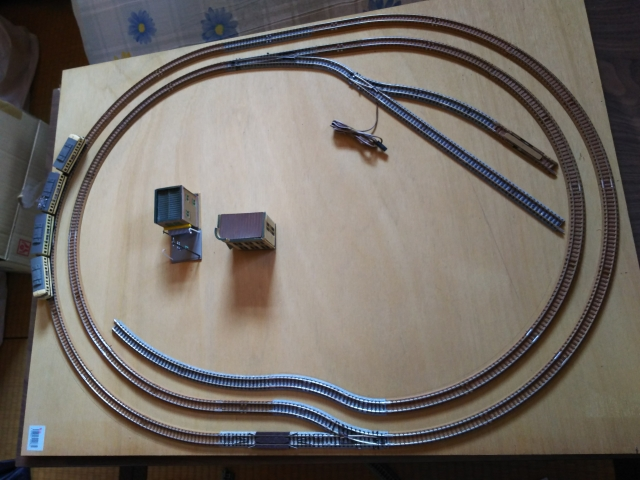
一方、Ｂトレ用のジオラマも並行して作成中です。
土台は数年前に作成済みで、線路の配置も決めてま
す。
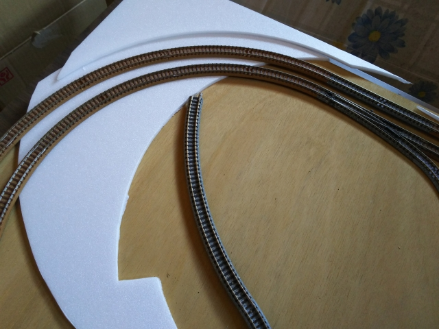
今回は、スチレンボードでジオラマの土台を作りま
す。
ダイソーで大きいサイズのスチレンボードを売って
いて、それを使いました。厚みが５ｍｍもあるのが
玉にキズです。
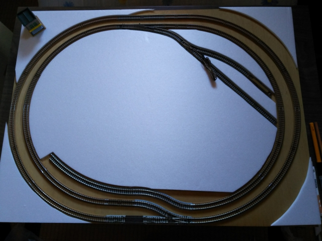
なかなかええ感じで切り取れました。
今回、初めてスチレンボードを使いましたが、工作
苦手人もカッターで簡単に切り取れるので、扱いや
すくて気に入りました。
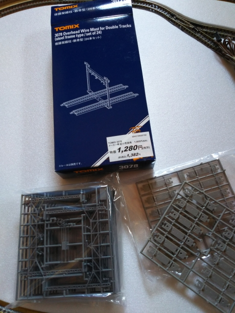
そして取り出したるは、ＴＯＭＩＸの複線用架線柱です。
珍しく新品で気合入れて買ってたやつなんですが、超めんどくさいです。
ジオコレで同じようなんがあるなら、買ったほうが良かったと思いまいたが、
このタイプはジオコレにもないので、あきらめがつきました。
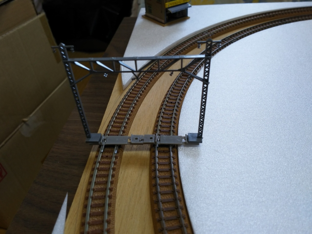
とりあえず、ひとつ完成。
しか～し、思ったより幅ありすぎ。
せっかくのスチレンボーボ－ド、もっと切らなあかん
やん・・・
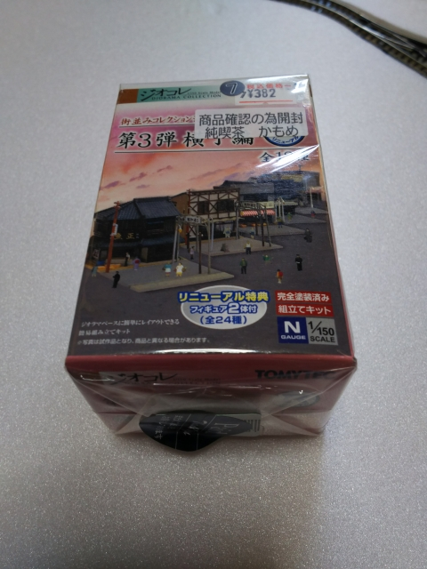
そろそろやる気も失せてきて、お手軽なジオコレの組み立てに逃げ込みます。
（こんな感じやから、いつまでたっても終わらんという自覚は持ってます）
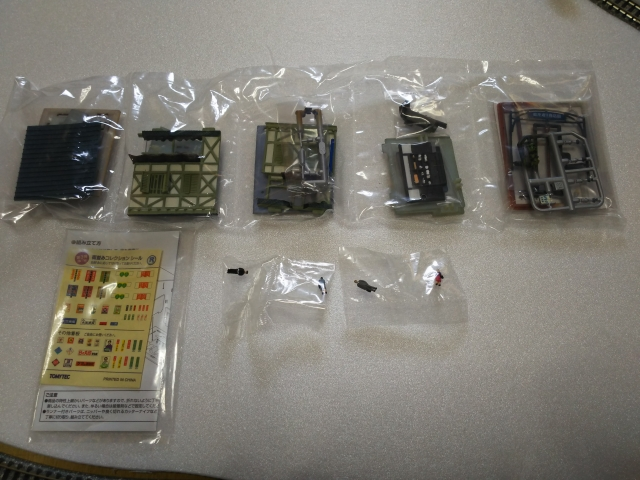
昭和な喫茶店が出来るはず。人形まで入ってて、得
した気分です。
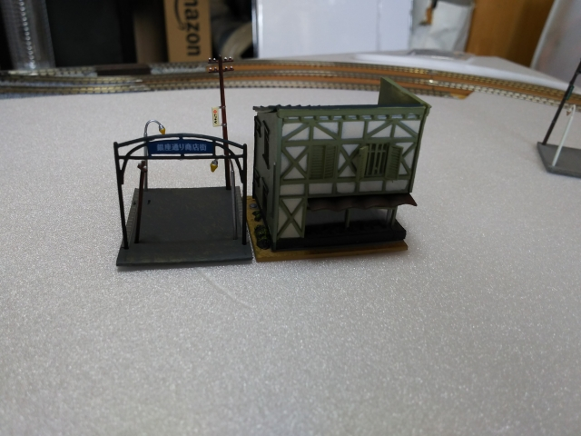
短時間で完成！ん～楽でいい。ジオコレシリーズが
人気なのもよくわかります。
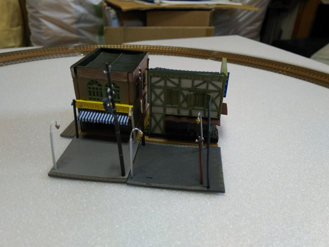
土台部分が反ってるのが玉にキズ。
スチレンボード削ってフラットにしよかと頭をよぎ
るけど、多分そこまでよーせんと思う・・・
完成は、１０年後ぐらいかな・・・